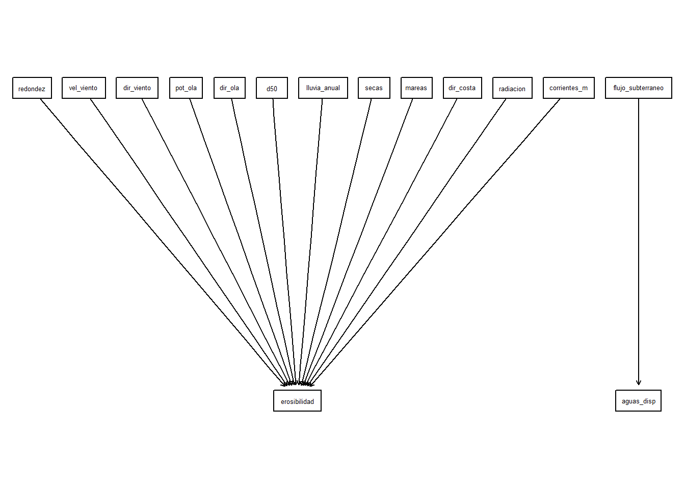

3 Datos

Characterization of Surface Evidence of Groundwater Flow Systems
3.1 Miro
3.1.1 Construcción colaborativa de Redes Bayesianas
La propuesta que hacemos es usar Miro como plataforma de debate y construcción de concenso. Buscamos así aproximarnos a la estructura causal que vincula las variables que determinan el rendimiento y la sustentabilidad (social, económica y ambiental). Una vez resuelta esta etapa, es necesario transferir lo acordado en Miro a plataformas de análisis estadístico. Aquí, nos propusimos trasladar los resultados de Miro a R. Al hacer esto las posibilidades analíticas se potencian muy ampliamente. Como veremos, podemos recurrir a dagitty o incluso utilizar Python y Netica. Para hacer esto optamos por la ruta de acceso commputacional a través de la interfase “REST”. Esto implica usar la biblioteca httr en R.

Hemos preparado una biblioteca con las rutinas que se describen aquí, para que las puedan usar según se requiera. Para descargarlas usa el botón que sigue.
3.1.2 Acceder a Miro
En preparación para interactuar con Miro se requiere tener permisos de acceso de acuerdo con las especificaciones que se dan aquí. Estas credenciales hay que evitar distribuirlas. Por consiguiente, para hacerlo hemos recurrido a la biblioteca keyring para mantenerlas confidenciales. Esta biblioteca permite utilizar el sistema de seguridad del equipo para la gestión de las claves. Para dar de alta una llave utilicé en este caso la instrucción siguiente, necesitarás dos identificadores de tu preferencia que deberán ir entrecomillados:
key_set(service = "[referencia de tu preferencia]", username = "[identificador de tu gusto]")
Una vez registrada en el equipo la llave, queda lista para su uso en cualquier momento en esa máquina .
if (!require(miro2bayes))
{
library(devtools)
install_github("equihuam/miro2bayesNet", force = TRUE)
}
library(miro2bayes)
library(bnlearn)
library(bnviewer)
library(tidyverse, quietly = TRUE, warn.conflicts = FALSE)
tableros <- miroBoards(servMiro = "miro", user = "miguel-edu-token")
tableros[, c("name", "id")] name id
1 Costa arenosa uXjVKB6PRSY=
2 Education Plan Basics uXjVPZCsPDE=
3 Education Plan Apps & Integrations uXjVPZCsPUo=
4 Education Plan Administration uXjVPZCsPVc=
5 Education Plan Useful Resources uXjVPZCsPVQ=tablero_tr <- tableros %>%
filter(str_detect(name, "Costa")) %>%
select(id, name)
datos_miro <- getMiro(servMiro = "miro", user = "miguel-edu-token",
board = tablero_tr)
miroValidation(datos_miro)Miro board origin: Costa arenosa
Is it a TRUE DAG?: Graph is acyclic
Number of sticky notes: 46
Nodes without var: 4
Number of linked nodes: 15
Duplicated nodes: 0
Number of arcs: 13
Well connected arcs: 13
Numb. Loose arcs: 0
Duplicated arcs: 0#neticaMiro <- miro2DNE(datos_miro)
#write(neticaMiro, "costa-arenosa.dne")
netMiro_bn <- miro2bnlearn(datos_miro)
netMiro_bn
Random/Generated Bayesian network
model:
[redondez][vel_viento][dir_viento][pot_ola][dir_ola][d50][lluvia_anual]
[secas][mareas][dir_costa][radiacion][flujo_subterraneo][corrientes_m]
[erosibilidad|redondez:vel_viento:dir_viento:pot_ola:dir_ola:d50:lluvia_anual:secas:mareas:dir_costa:radiacion:corrientes_m]
[aguas_disp|flujo_subterraneo]
nodes: 15
arcs: 13
undirected arcs: 0
directed arcs: 13
average markov blanket size: 10.53
average neighbourhood size: 1.73
average branching factor: 0.87
generation algorithm: Empty variables <- tibble(var = datos_miro$nodes$var)
graphviz.plot(netMiro_bn, layout = "dot")
La lista de variables identificadas es: